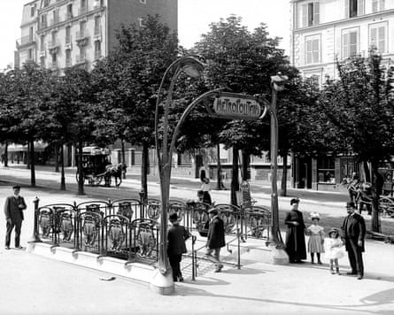
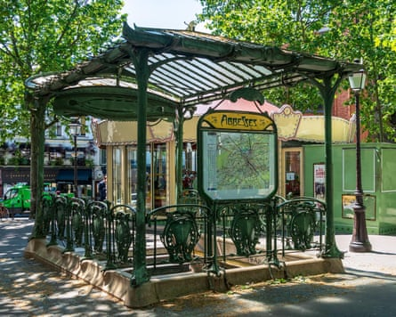

The “forgotten” designer of Paris’s most iconic Métro station entrances and art nouveau buildings is to be given his rightful place in the city’s history with a museum dedicated to his work.
Hector Guimard left a distinctive mark across the French capital in the early 1900s, creating elaborate and monumental Métro entrances whose fans of iron and glass resembling unfurled insect wings were nicknamed dragonflies.
The remaining station surrounds of sinuous cast iron, with lamps resembling lily-of-the-valley flowers and topped with the stylised Métropolitain sign that Guimard also designed, feature in postcards, tourist photos and style books. When installed in the early 1900s, however, many Parisiens were scandalised.
One critic declared the green paint “un-French” and another said the ornate signs were “confusing to children trying to learn their letters … and stupefying to foreigners”.
Art nouveau went out of fashion, and by 1913 the transport authorities had dropped Guimard’s designs. By 1942, when Guimard died aged 75 in New York, where he and his American Jewish wife had sought refuge from the Nazis, he had already been forgotten and much of his work consigned to the scrap heap.
“It may be surprising to foreign visitors but the French have never really liked art nouveau,” said Fabien Choné, a Guimard collector and head of Hector Guimard Diffusion , a company involved in establishing the new museum. “There was great opposition to Guimard’s Métro entrances. While visitors saw them as marvellous symbols of the belle époque Métro, Parisians criticised it as what they called spaghetti style and couldn’t understand why tourists liked them.”
A Métro station entrance on the boulevard Pasteur by Hector Guimard, circa 1900.Photograph: Roger Viollet/Getty Images
On returning to Paris in 1948, his widow, Adeline, an artist whose work had been displayed at the 1899 Beaux-Arts salon, worked tirelessly to preserve and promote her husband’s legacy, which included about 50 residential buildings.
She donated his drawings and smaller creations, including furniture, to museums, many of them in the US, and offered to bequeath the couple’s art nouveau home, the Hôtel Guimard, and its contents to the state and then to the city. Both turned down the offer and the building was converted into flats with the furnishings scattered.
In the wave of modernism that swept post-war Europe the style was sober and many Guimard creations were declared without historic or artistic value and destroyed. Of the 167 Métro entrances that he designed – described by Salvador Dalí, who painted Tribute to Guimard in 1970, as divine – only 88 remain.
Choné said: “After the war, each time the city did any work on the streets, they got rid of Guimard’s designs. Even up until the 1960s to 70s the logic was one of destruction rather than preservation.”
Abbesses station in Montmartre, Paris.Photograph: UlyssePixel/Alamy
The museum will be established at the Hôtel Mezzara, a four-storey building in Paris’s 16th arrondissement designed by Guimard in 1910 and which features much of his signature ironwork, including a spectacular glass skylight and chandeliers.
The building, originally commissioned by Guimard’s friend Paul Mezzara, a rich textile manufacturer from Venice and later acquired by the education ministry and used as student accommodation until a decade ago, will undergo a €6m (£5.2m), two-year renovation before opening around the end of 2027.
Once open it will display known Guimard creations including art nouveau furniture and decorations as well as an archive of his designs and documents.
“It is absurd that there is recognition of Guimard at museums around the world, especially in the US, and nothing in Paris when he created some of the most important symbols of the city,” Choné said.
Nicolas Horiot, an architect and the president of Le Cercle Guimard , an association created 23 years ago to save Guimard’s designs and documents, said it had been a decade-long battle to get the state and Paris authorities to recognise the designer’s work. He said the museum would right a historic wrong.
“After the second world war, Guimard was completely forgotten. Art nouveau no longer interested people in the urban design of the 1960s and many of his pieces were destroyed,” he said. “The revival started in 1970 with an exhibition in New York, but it was a step-by-step process. We see this museum as repairing an injustice done to Guimard.”